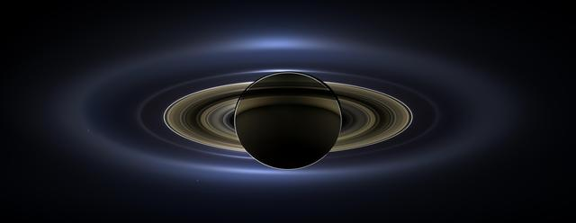
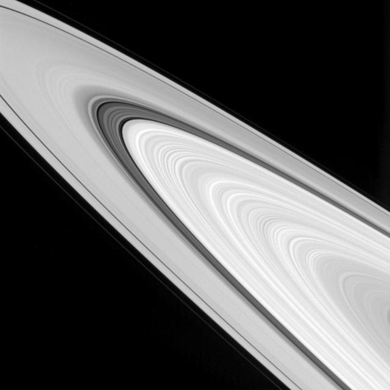

Saturn
Saturn is known for its rings, which are made mostly of ice and rock. It is a gas giant made mainly of hydrogen and helium.
Type
Gas giant
Rings
Wide and bright
Fun Fact
Very low density
Saturn is known for its rings, which are made mostly of ice and rock. It is a gas giant made mainly of hydrogen and helium.
Gas giant
Wide and bright
Very low density
NASA IMAGE ARCHIVE


Saturn's rings are made of many small pieces of ice and rock orbiting the planet. The rings are wide but very thin, and Saturn itself has a low density.
Choose a topic to learn a fact about Saturn's rings.